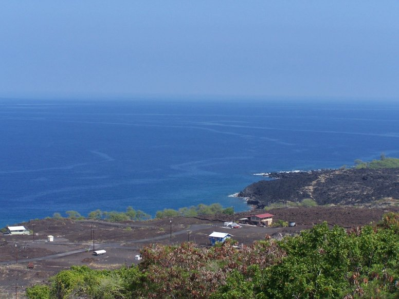
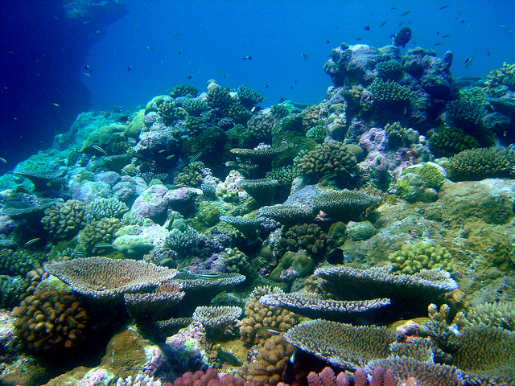
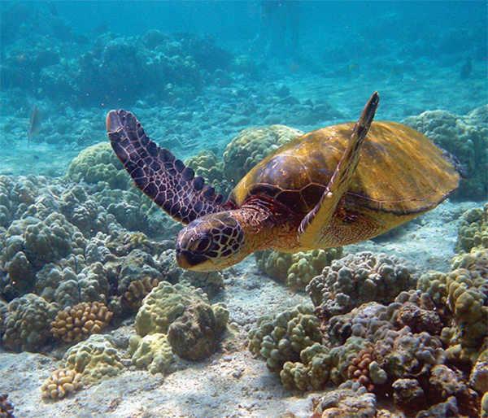

West Hawai'i - Projects
Below are links to current projects by West Hawai'i IEA scientists that employ elements of the IEA framework. These projects exemplify some of the analytical tools designed to support an ecosystem-based approach to management in the West Hawai'i marine ecosystem and serve a wide range of stakeholders, managers, and other end users.
_1.jpg)
Understanding People's Connection to the Ocean
Human Dimensions within the Integrated Ecosystem Assessment
NOAA's Integrated Ecosystem Assessment (IEA) was developed in recognition of the need for Ecosystem-Based Management (EBM) of our oceans. The IEA Program recognizes the importance of the connections between humans and ecosystems, and the significant role that the environment can play in human well-being. Understanding human well-being is essential to EBM because ecosystem change and resource management decisions impact human well-being. At the same time, changes in human well-being can affect the ways that people choose to interact with the ecosystem.

Important Habitat - Surface Slicks
Studying the habitat requirements of marine species throughout their life history provides key insight into the environmental drivers that regulate their distribution, abundance, and survivorship. However, there is a lack of information on larval fish ecology of most commercially and ecologically important fish species, rendering it difficult to predict how changes in the environment will impact fisheries in the region. This West Hawai‘i project seeks to fill this knowledge-gap by researching a highly conspicuous yet relatively unknown oceanic feature - surface slicks. Surface slicks are narrow, meandering lines on the surface ocean that concentrate food-resources at the base of the food-chain which may contribute to the growth and survival of larval fishes. Our goal is to understand what causes surface slicks, what organisms accumulate in surface slicks, and to ultimately assess the ecological importance of surface slicks for larval fishes in West Hawai‘i.

Coral Reefs Vulnerable to Climate Change
Hawaiian human and coral reef communities have always been connected. Actions taken to reduce coral reef vulnerability are in the spirit of maintaining the strength of these connections as the climate changes. Management actions that limit or restrict human activities on the west coast of the island of Hawai’i (West Hawai’i) will increase coral reefs ability to resist and recover from climate change and other disturbances. Targeting and tailoring management these management actions on areas that are most vulnerable to climate change can give reefs in West Hawai‘i the best chance of coping with climate change.

Small Changes Leading to Drastic Shifts in the Ecosystem
Ocean tipping points in Hawai‘i
In response to stressors such as pollution and fishing, reefs can "tip" into a degraded state that may be difficult to reverse.
The people of Hawai‘i depend upon a healthy nearshore ecosystem for food, clean water, commerce, recreation, and culture—tipping points can alter these benefits.
Resource managers need to know when, where, and why tipping points may be crossed to help protect and restore these valuable ecosystems and the benefits they provide.
An Evaluation of Management Strategies
Evaluating management scenarios to improve marine ecosystem health
Current management is not adequate to prevent further declines in Puakō, Hawaii’s marine ecosystem. Banning all gears other than line fishing, or prohibiting take of herbivorous fishes, were most effective at enhancing reef structure and resilience, diver tourism, and the recreational fishery. The West Hawai‘i Integrated Ecosystem Assessment evaluated how different management strategies would influence the marine ecosystem and ecosystem services in Puakō, Hawai‘i.
%20(1).jpg)
Uncovering Mysteries of the Deep
Researching marine food-web dynamics is essential for developing successful management strategies for higher trophic groups. The mesopelagic, which encompasses a depth range from about 200-1000 m (640-3,330 ft), is home to an extraordinary number of deep-sea fishes, crustaceans, and cephalopods that are thought to be a critical link in the food-web of whales and dolphins in West Hawai‘i. These organisms, often referred to as the Mesopelagic Boundary Layer Community, are found in high abundances off of West Hawai‘i yet relatively little is known or understood about species distributions and interactions. This West Hawai‘i IEA project is focused on uncovering the mysteries of these deep-sea organisms with the aim of furthering our knowledge-base on the current and future status of marine mammals in the region.